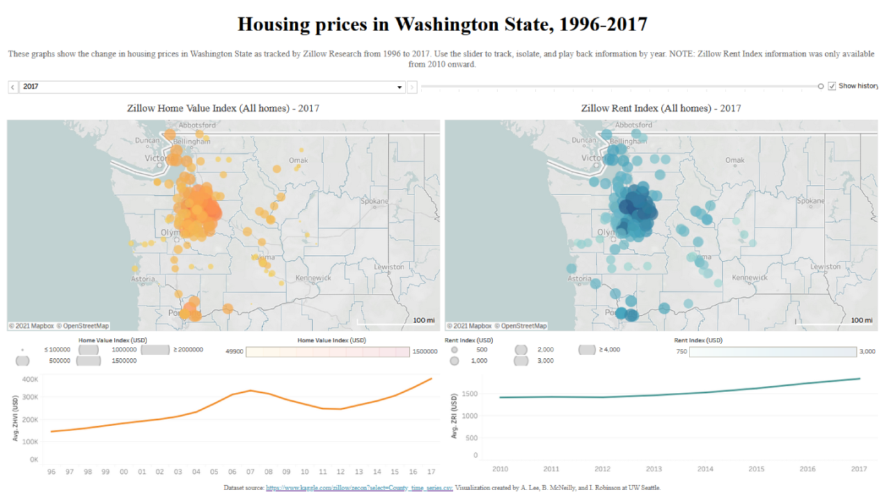

I created a data visualization of how housing prices in Seattle have changed over the past two decades.
For my Interactive Information Visualization course at the University of Washington Information School, I used Tableau to visualize the value of homes in various Washington State cities from 1996 to 2017. During this group project, we were tasked with creating an animated data visualization showing some sort of change over time (which was completely new to me). As a young adult and renter, I’m interested in exploring housing price trends which may affect the places I choose to rent in the future (or any homes I may consider purchasing outright).
Our first task was to prep our dataset into a manageable format. The original dataset from Zillow Research was massive -- it included data for housing prices in all 50 states and was more than 1 gigabyte. We limited our usable dataset to just Washington State in particular, for convenience’s sake and also because every group member had some personal stake in the area.
Next, I created a rough draft of the visualization in Tableau and conducted usability tests with members of a potential target audience. We tried to capture a variety of perspectives, so we interviewed everyone from students who had only rented to retirees who have purchased multiple homes in their lifetimes. Through those usability tests, I was able to create an improved version based on our interviewees’ suggestions, within the limits of my own ability.
You can view the full interactive visualization on my Tableau Public page (a screenshot is shown below).
In the future when I create interactive data visualizations, I will be sure to keep some of the suggestions I got in mind:
- Account for and try to fix missing data in a dataset: Despite our best efforts, some data values in our dataset were missing or otherwise difficult to work with. In the future, I will need to carefully prep my dataset and make my data as complete as possible in order to create the best possible visualization.
- Compare with other, similar values: Many of our interviewees wondered how housing prices in Washington State compared to those of different parts of the country, and if economic events like the 2008 recession affected all parts of the country similarly. We were unfortunately unable to include these due to time constraints, but if I had more time to dedicate to this project in the future, I would return to this dataset and include information such as a national or regional average home value.